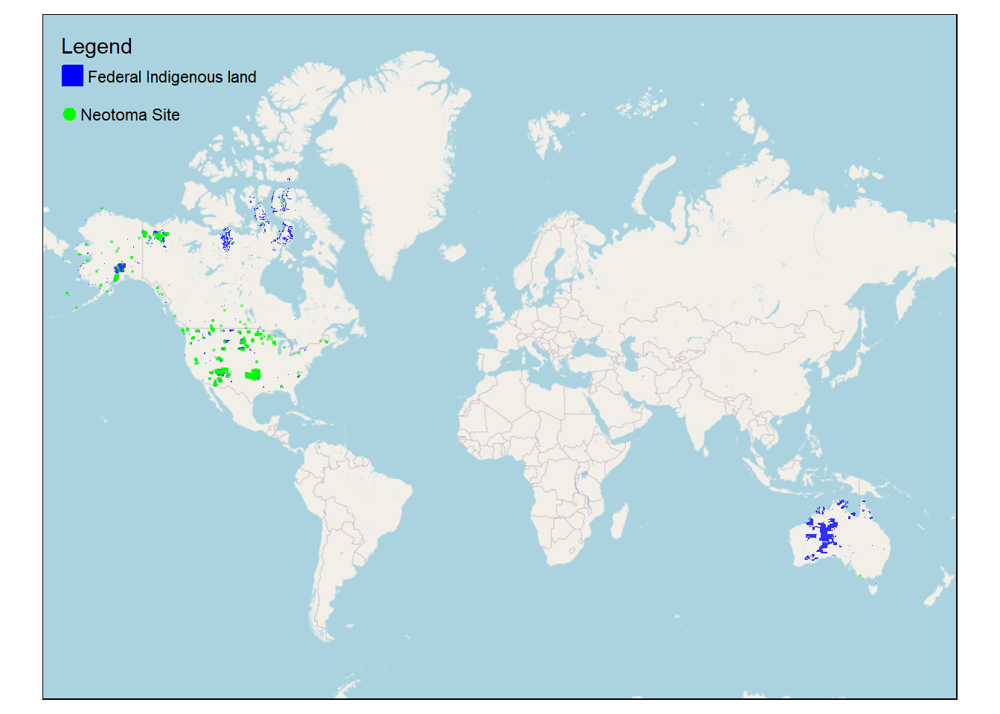
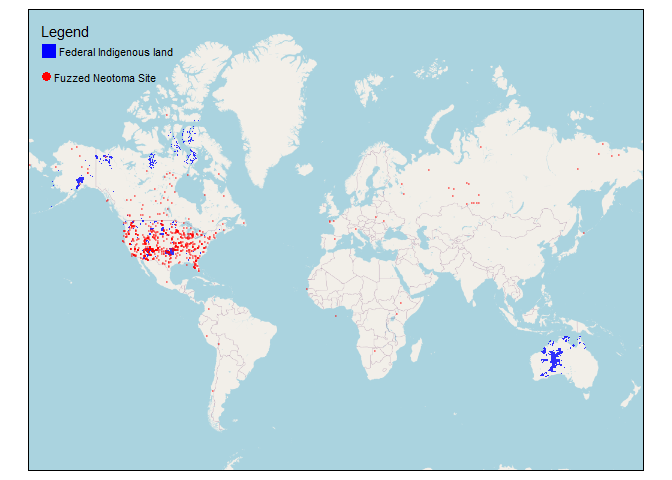
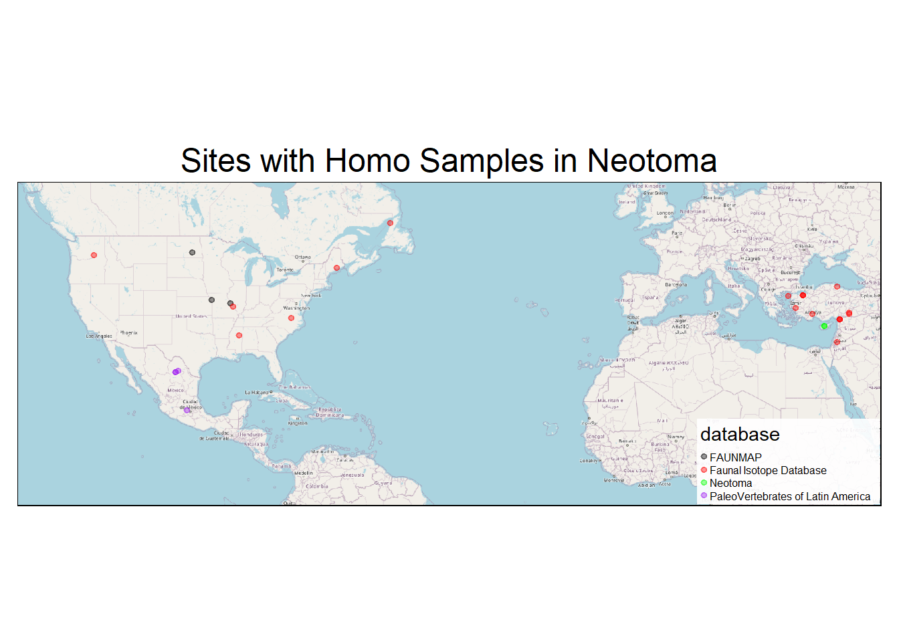

The intention of this data audit is to find any records from the Neotoma Paleoecology Database which potentially violate Neotoma’s statement of values, especially with respect to Neotoma’s goal of aligning with principles of Indigenous data sovereignty.
We did a spatial join for every site in Neotoma with a unique site ID to shapefiles of the borders of federal Indigenous in the United States and Canada, and Indigenous protected areas in Australia, and we tallied and mapped all those which intersected the borders of federal reservations. See list below.

Our next steps are…
We checked for all sites whether both the latitude and longitude were exactly divisible by 0.25. If they were, we said they were fuzzed. Notice that this is a conservative method. There are likely fuzzed sites in Neotoma whose coordinates are not exactly divisibl by 0.25. We found 927 such fuzzed sites. The table below documents their siteids and names, and the map below documents their locations.

our next steps…
We downloaded Neotoma’s taxa table and selected any taxon IDs which might describe people.(Taxon ID 6359 is Primates, and 6171 is Mammalia.)
Then we used a Neotoma API to search for any occurrences of those taxon IDs.
The two maps below show the sites they come from, and the table documents what information there is about those samples from the samples table in Neotoma. 
Below I count the occurrences by database and taxon.
Lastly, I count the countries the distinct sites are in.
Next steps are….
We searched through two fields (notes and materialdated) from Neotoma’s geochronology table for any occurrences of words from the dictionary below.
Any rows from the geochronology table which contained one of the above words is listed in the table below. Notice that not all of these radiocarbon dates is necessarily problematic, only potentially. Further scrutiny may be needed. (We also checked against CARD’s list of radiocarbon dates deriving from human ancestors that are duplicated in Neotoma, and there was agreement between the two lists: all 60 of CARD’s records that are also in Neotoma are in the below table.)
Actually scrutinizes these records.
We used the same dictionary from the last query to search through two fields in Neotoma’s collection units table (location and notes). Any collection units that returned one of the above words is reproduced below.
collunits-location, and collunits-notes.
We also took another approach, wherein we selected any depostional environment IDs that corresponded to archaeological sites (see table below), and filtered for all collection units that corresponded to any of those depositional environment IDs. This returned 1812 results.
Need to actually scrutinize these records.